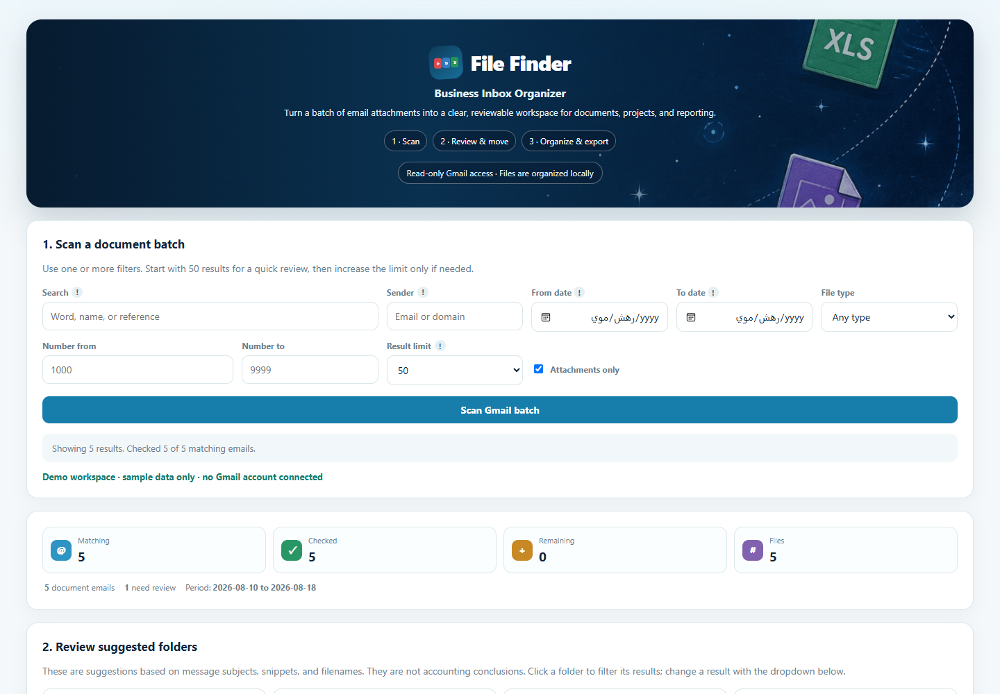
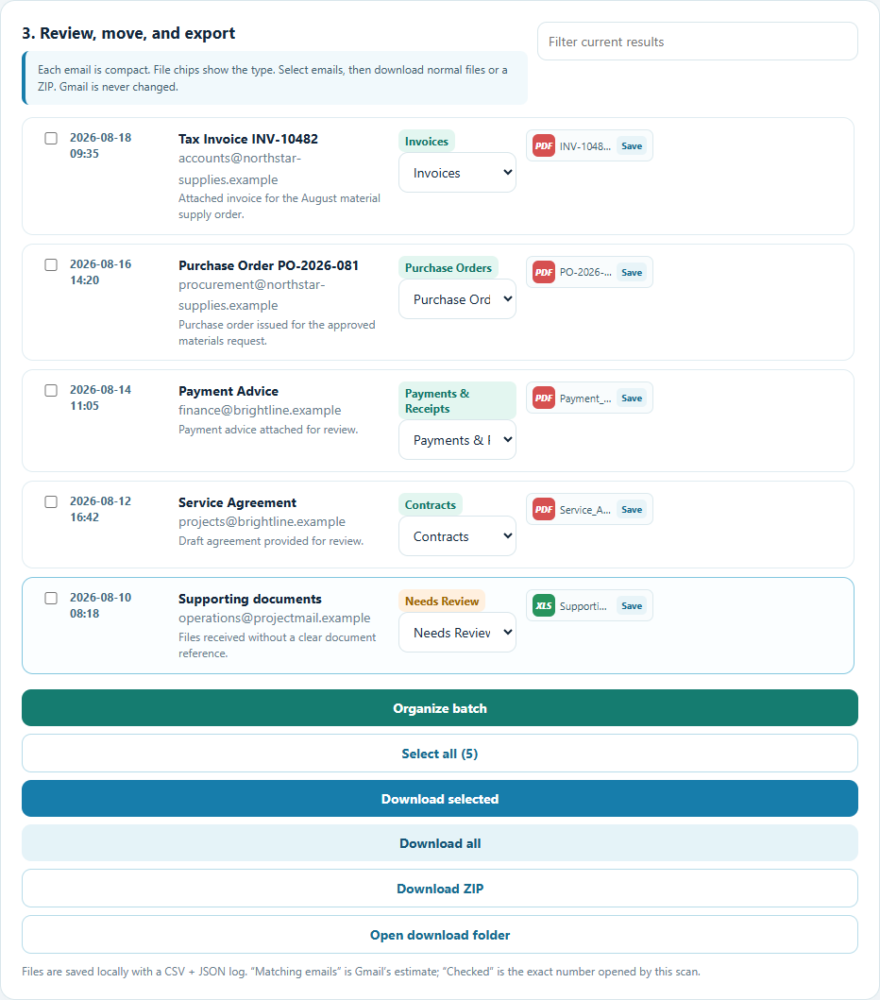

File Finder
A local workspace for finding business documents in email attachments, checking suggested folders and exporting the files you select.
The public showcase uses synthetic messages. It never asks visitors to connect Gmail.

THE PROBLEM
Business files arrive in many email threads
Invoices, purchase orders, payment advice and agreements may arrive as attachments from different senders. Retrieving one document later often means repeating searches and opening each message again. The goal was a reviewable batch, not another copy of the inbox.
THE WORKFLOW
Scan, review, then export
- 01
Find a defined batch
Filter messages by text, sender, dates, attachment type or reference range. The interface separates an estimated match count from the messages actually checked.
- 02
Review every suggestion
The tool suggests a folder from the message subject, snippet and filename. The user can correct it, and uncertain items stay in Needs Review.
- 03
Save a local work package
Export selected attachments or organize the batch into local folders with CSV and JSON logs for later Excel or Power BI work.
DESIGN DECISIONS
Keep people in control of document classification
File Finder uses the Gmail read-only scope. It does not send, delete, move or label messages. Export happens on the local computer. Suggested categories support review; they are not accounting or legal conclusions.
I separated the public demo from the private Gmail connection so a recruiter or prospective client can inspect the workflow without sharing an account.
PRODUCT EVIDENCE
Review before download
This demo batch contains five fictional messages. The final row remains in Needs Review because its filename does not identify the document clearly. The screenshot comes from the working interface with synthetic responses; no personal mailbox data was used.

25-SECOND WALKTHROUGH
A short visual tour
Read the walkthrough summary
The video shows the three stages: connect with read-only Gmail authorization in an approved private edition, scan a defined email batch, and review suggested folders before downloading. The public page itself uses synthetic examples and does not connect to Gmail.
CURRENT STATUS
A portfolio edition, with clear release limits
The Windows portfolio package and interactive demo are available. Private Gmail use requires an approved OAuth setup. A public Gmail connection has not completed Google's production verification, and this case study makes no claim of customer adoption, measured time savings or third-party security certification.
Next release work: automated tests, pinned dependencies, an independent privacy review and a small user trial before any wider distribution.